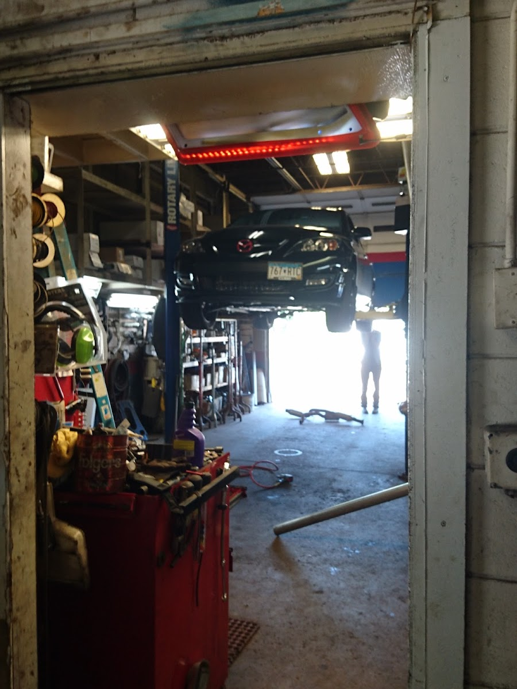

Tire Service in Shakopee, MN
Auto Repair Shop is the Shakopee tire shop drivers turn to for new tires, rotations, balancing, and flat repair — a straight answer about what your tires actually need, in every Minnesota season.
Tire Service in Shakopee You Can Trust
If you're looking for a tire shop in Shakopee MN, we'll give you an honest read on what your tires need — a rotation, a patch, or a new set — without pushing a sale you don't need. Tires are the only part of your vehicle actually touching the road, and worn or damaged tires affect everything from stopping distance to how your vehicle handles in rain or snow. Drivers from Shakopee, Prior Lake, and Savage bring us everything from a slow leak to a full set of new tires before winter, and we start every visit the same way: a real look at the tires you have before we talk about anything else.
What Our Tire Service Covers
Tire service covers more than mounting new rubber, and we handle the full range:
- New tire sales and installation — matched to your vehicle and how you drive.
- Tire rotation — moving tires between positions so they wear evenly and last longer.
- Wheel balancing — correcting vibration and uneven wear caused by an out-of-balance wheel.
- Flat tire and puncture repair — patching a repairable tire instead of automatically selling you a new one.
- Tire pressure checks — especially important as Minnesota temperatures swing through the seasons.
- Tread and sidewall inspection — catching uneven wear, bulges, or damage before they become a blowout.
If it touches the road, it's part of what we check.
Signs You Need Tire Service
Tire problems don't always announce themselves loudly. Here's what's worth a call:
- Visibly worn tread, or tread that's wearing unevenly across the tire.
- A tire that keeps losing air even without an obvious puncture.
- A vibration in the steering wheel or seat at highway speed.
- A tire pressure warning light on the dash.
- A bulge, crack, or visible damage on the sidewall.
- Reduced traction in rain or snow compared to how the vehicle used to handle.
Catching tire issues early is a safety matter as much as a maintenance one, especially heading into a Minnesota winter.
What to Expect
Appointments are recommended for tire service so we can get your vehicle in and worked on properly. Tell us what you're noticing — a slow leak, a vibration, visible wear — and we'll inspect the tires and explain what we find before recommending anything. If a patch will fix a flat, we'll patch it. If tread is genuinely worn down, we'll walk you through options for new tires that fit your vehicle and budget.
Why Tire Service Matters More in a Minnesota Winter
Cold temperatures cause tire pressure to drop, which is one of the most common reasons for a tire pressure warning light every fall. Worn tread loses grip fast on snow and ice, which is exactly the wrong time for tires that were fine in summer to become a real risk. The potholes that show up every spring after a freeze-thaw cycle can damage tires and throw off alignment in ways that cause uneven wear for months afterward. Road salt used to clear Shakopee streets doesn't damage tires directly the way it does metal components, but the potholes and rough pavement it accompanies absolutely do. That's why a tread check before winter and another after the spring thaw catches problems while they're still simple.

Areas We Serve
We're based at 100 Scott St N in Shakopee (Scott County) and provide tire service for drivers throughout Shakopee, Prior Lake, Savage, Jordan, and Scott County, as well as the greater south Twin Cities metro.
Why Drivers Choose Auto Repair Shop for Tires
You get a genuine recommendation about your tires, not a sales pitch. Reviewers consistently mention pricing that stays fair year after year and a shop that fixes what's actually wrong instead of upselling. That's the same approach whether you need a $20 patch or a full set of four new tires, and it's why drivers keep this shop as their go-to for everything, tires included.
Tire Service FAQ
Watch for tread wearing down toward the wear bars, uneven wear patterns, cracks or bulges in the sidewall, or reduced grip in rain or snow. Bring it in and we'll give you a straight read on how much life is left.
A common guideline is every 5,000 to 7,500 miles, which helps tires wear evenly and last longer. If you're not sure when yours were last rotated, we can check the wear pattern and let you know.
A slow leak is often a small puncture, a valve stem issue, or a wheel seal problem, and cold weather alone can also cause pressure to drop. Bring it in and we'll find the actual cause rather than just topping off the air.
In most cases, yes — a properly located puncture in the tread can usually be patched. If the damage is in the sidewall or too severe to safely repair, we'll tell you honestly instead of patching something that isn't safe.
We accept credit cards, debit cards, and NFC mobile payments like Apple Pay and Google Pay, so you can pay however's easiest when you pick up your vehicle.
You can get tire service in Shakopee at Auto Repair Shop, 100 Scott St N, for new tires, rotation, balancing, and flat repair. We also serve Prior Lake, Savage, Jordan, and the rest of Scott County. Call or text (952) 445-3530.
Request a Time That Works for You
Text us the service you need and we'll reply with the next open appointment times. Prefer to talk it through? Give us a call and we'll get you on the schedule.